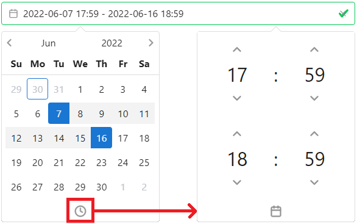
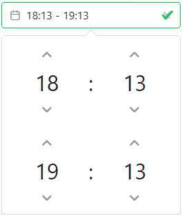
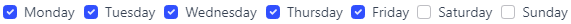

Time Constraints#
Overview#
Time Constraints are an additional type of control used to determine whether an alert should be processed by the corresponding plugin or not.
List of time constraints:
When using multiple time constraints of the same type, only one needs to match for the time constraint to be matching.
When using multiple time constraints of different types, all of them need to match for the time constraint to be matching.
Time Constraint = (DateTime A OR DateTime B)
AND (Time A OR Time B) AND (Weekday A OR Weekday B)
Caution
Starting time begins at 0 second. Ending time finishes at 59 seconds.
For example, 04:30 - 07:29 representation starts at 04:30:00 and ends at 07:29:59
DateTime#
In Year-Month-Day Hour(24):Minute format, DateTime is the only time representation that actually expires.
datetime:
- from: 2022-01-01 00:00
until: 2022-01-31 23:59
- from: 2022-05-01 00:00
until: 2022-05-31 23:59
Alerts matching this time constraint need to have their timestamp in January 2022 or in May 2022.
Web interface#

To select a range, click on the starting date then on ending date on the calendar. Time can be set by clicking on the clock icon. To select a 1 day range, click on a date twice (the selected area should become a square)
Hint
DateTime and Time can be copy pasted or manually inputted using the keyboard.
Time#
In Hour(24):Minute, Time by itself represents a daily interval.
time:
- from: 04:00
until: 07:59
- from: 16:00
until: 19:59
Alerts matching this time constraint need to have their timestamp between 04:00:00 and 07:59:59 or between 16:00:00 and 19:59:59
Web interface#

Weekdays#
Accepts a list of numbers matching their corresponding weekday. Weeks start on Sunday (0)
weekdays:
- weekdays: [0, 1]
Alerts matching this time constraint need to have their timestamp in Sunday or Monday
Web interface#
